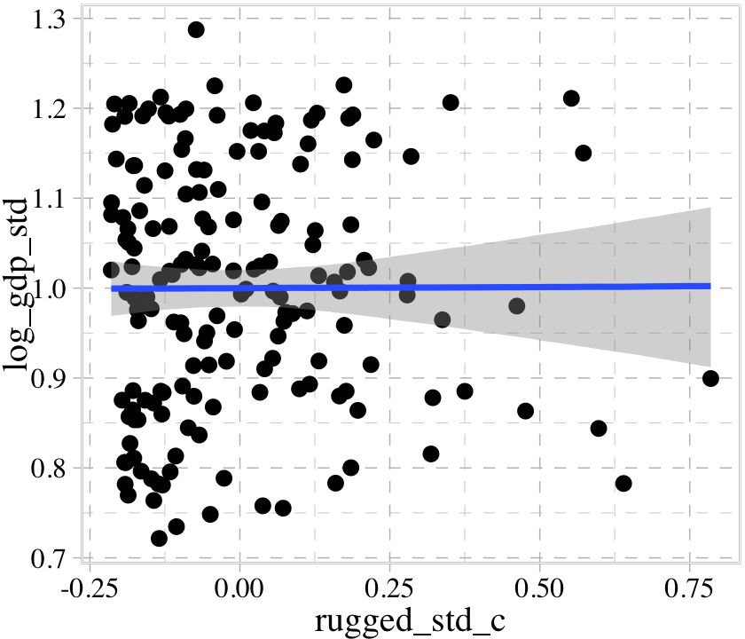

data(rugged, package = "rethinking")
d <- rugged
rm(rugged)
# May as well load this, too
library(brms)8 Conditional Manatees
Every model so far in this book has assumed that each predictor has an independent association with the mean of the outcome. What if we want to allow the association to be conditional?…
To model deeper conditionality–where the importance of one predictor depends upon another predictor–we need interaction (also known as moderation). Interaction is a kind of conditioning, a way of allowing parameters (really their posterior distributions) to be conditional on further aspects of the data. The simplest kind of interaction, a linear interaction, is built by extending the linear modeling strategy to parameters within the linear model. So it is akin to placing epicycles on epicycles in the Ptolemaic and Kopernikan models. It is descriptive, but very powerful.
More generally, interactions are central to most statistical models beyond the cozy world of Gaussian outcomes and linear models of the mean. In generalized linear models (GLMs, Chapter 10 and onwards), even when one does not explicitly define variables as interacting, they will always interact to some degree. Multilevel models induce similar effects. (McElreath, 2020, p. 238, emphasis in the original)
8.1 Building an interaction
“Africa is special” (p. 239). Let’s load the rugged data (Nunn & Puga, 2012) to see one of the reasons why.
For this chapter, we’ll take our plot theme from the ggthemes package (Arnold, 2021).
library(tidyverse)
library(ggthemes)
theme_set(
theme_pander() +
theme(text = element_text(family = "Times"),
panel.background = element_rect(color = "black"))
)We’ll use the pander color scheme to help us make our first DAG.
library(ggdag)
dag_coords <- tibble(
name = c("R", "G", "C", "U"),
x = c(1, 2, 3, 2),
y = c(2, 2, 2, 1))
dagify(R ~ U,
G ~ R + U + C,
coords = dag_coords) |>
ggplot(aes(x = x, y = y, xend = xend, yend = yend)) +
geom_dag_point(aes(color = name == "U"),
alpha = 1/2, size = 6, show.legend = F) +
geom_point(x = 2, y = 1,
color = palette_pander(n = 2)[2], shape = 1, size = 6, stroke = 3/4) +
geom_dag_text(color = "black", family = "Times") +
geom_dag_edges() +
scale_colour_pander() +
theme_dag()
Let’s ignore \(U\) for now… Focus instead on the implication that \(R\) and \(C\) both influence \(G\). This could mean that they are independent influences or rather that they interact (one moderates the influence of the other). The DAG does not display an interaction. That’s because DAGs do not specify how variables combine to influence other variables. The DAG above implies only that there is some function that uses \(R\) and \(C\) to generate \(G\). In typical notation, \(G = f(R, C)\). (p. 240)
It’s generally not a good idea to split up your data and run separate analyses when examining an interaction. McElreath listed four reasons why:
- “There are usually some parameters, such as \(\sigma\), that the model says do not depend in any way upon continent. By splitting the data table, you are hurting the accuracy of the estimates for these parameters” (p. 241).
- “In order to acquire probability statements about the variable you used to split the data,
cont_africa, in this case, you need to include it in the model” (p. 241). - “We many want to use information criteria or another method to compare models” (p. 241).
- “Once you begin using multilevel models (Chapter 13), you’ll see that there are advantages to borrowing information across categories like ‘Africa’ and ‘not Africa’” (p. 241).
8.1.0.1 Overthinking: Not so simple causation
Here’s the DAG for a fuller model for the data.
dag_coords <- tibble(
name = c("G", "R", "H", "C", "U"),
x = c(1, 1.5, 2.5, 3.5, 1),
y = c(3, 2, 2, 2, 1))
dagify(G ~ R + U + H,
R ~ U,
H ~ R + U + C,
coords = dag_coords) |>
ggplot(aes(x = x, y = y, xend = xend, yend = yend)) +
geom_dag_point(aes(color = name == "U"),
alpha = 1/2, size = 6, show.legend = F) +
geom_point(x = 1, y = 1,
color = palette_pander(n = 2)[2], shape = 1, size = 6, stroke = 3/4) +
geom_dag_text(color = "black", family = "Times") +
geom_dag_edges() +
scale_colour_pander() +
theme_dag()“The data contain a large number of potential confounds that you might consider. Natural systems like this are terrifyingly complex” (p. 241). In the words of the great Dan Simpson, “Pictures and fear–this is what we do [in statistics]; we draw pictures and have fear” (see here).
8.1.1 Making a rugged model
We’ll continue to use tidyverse-style syntax to wrangle the data.
# Make the log version of criterion
d <- d |>
mutate(log_gdp = log(rgdppc_2000))
# Extract countries with GDP data
dd <- d |>
filter(complete.cases(rgdppc_2000)) |>
# Re-scale variables
mutate(log_gdp_std = log_gdp / mean(log_gdp),
rugged_std = rugged / max(rugged))Before we fit our first Bayesian models, let’s back track a bit and make our version of Figure 8.2. In the title, McElreath indicated it was a depiction of two linear regressions separated by whether the nations were African. A fairly simple way to make those plots is to simultaneously fit and plot the two regression models using OLS via the geom_smooth() function using the method = "lm" argument. After dividing the data with cont_africa, make each plot separately and then combine them with patchwork syntax.
library(ggrepel)
library(patchwork)
# African nations
p1 <- dd |>
filter(cont_africa == 1) |>
ggplot(aes(x = rugged_std, y = log_gdp_std)) +
geom_smooth(method = "lm", formula = y ~ x,
fill = palette_pander(n = 2)[1],
color = palette_pander(n = 2)[1]) +
geom_point(color = palette_pander(n = 2)[1]) +
geom_text_repel(data = dd |>
filter(cont_africa == 1) |>
filter(country %in% c("Lesotho", "Seychelles")),
aes(label = country),
size = 3, family = "Times", seed = 8) +
labs(x = "ruggedness (standardized)",
y = "log GDP (as proportion of mean)",
subtitle = "African nations")
# Non-African nations
p2 <- dd |>
filter(cont_africa == 0) |>
ggplot(aes(x = rugged_std, y = log_gdp_std)) +
geom_smooth(method = "lm", formula = y ~ x,
fill = palette_pander(n = 2)[2],
color = palette_pander(n = 2)[2]) +
geom_point(color = palette_pander(n = 2)[2]) +
geom_text_repel(data = dd |>
filter(cont_africa == 0) |>
filter(country %in% c("Switzerland", "Tajikistan")),
aes(label = country),
size = 3, family = "Times", seed = 8) +
xlim(0, 1) +
labs(x = "ruggedness (standardized)",
y = "log GDP (as proportion of mean)",
subtitle = "Non-African nations")
# Combine
p1 + p2 + plot_annotation(title = "Figure 8.2. Separate linear regressions inside and outside of Africa")
Our first Bayesian model will follow the form
\[\begin{align*} \text{log\_gdp\_std}_i & \sim \operatorname{Normal}(\mu_i, \sigma) \\ \mu_i & = \alpha + \beta \left (\text{rugged\_std}_i - \overline{\text{rugged\_std}} \right ) \\ \alpha & \sim \operatorname{Normal}(1, 1) \\ \beta & \sim \operatorname{Normal}(0, 1) \\ \sigma & \sim \operatorname{Exponential}(1). \end{align*}\]
Here we compute \(\overline{\text{rugged\_std}}\).
mean(dd$rugged_std)[1] 0.2149601A naïve translation of McElreath’s rethinking code into a brms::brm() formula argument might be log_gdp_std ~ 1 + (rugged_std - 0.215 ). However, this kind of syntax will not work outside of the non-linear syntax. Our approach will be to make a mean-centered version of rugged_std.
dd <- dd |>
mutate(rugged_std_c = rugged_std - mean(rugged_std))Now fit the model.
b8.1 <- brm(
data = dd,
family = gaussian,
log_gdp_std ~ 1 + rugged_std_c,
prior = c(prior(normal(1, 1), class = Intercept),
prior(normal(0, 1), class = b),
prior(exponential(1), class = sigma)),
iter = 2000, warmup = 1000, chains = 4, cores = 4,
seed = 8,
sample_prior = T,
file = "fits/b08.01")Did you notice the sample_prior = T argument? Because of that, we can now use the prior_draws() function to help us plot the prior predictive distribution for m8.1 and make our version of the left panel of Figure 8.3.
prior <- prior_draws(b8.1)
set.seed(8)
p1 <- prior |>
slice_sample(n = 50) |>
rownames_to_column() |>
expand_grid(rugged_std_c = c(-2, 2)) |>
mutate(log_gdp_std = Intercept + b * rugged_std_c,
rugged_std = rugged_std_c + mean(dd$rugged_std)) |>
ggplot(aes(x = rugged_std, y = log_gdp_std, group = rowname)) +
geom_hline(yintercept = range(dd$log_gdp_std), linetype = 2) +
geom_line(alpha = 0.4, color = palette_pander(n = 2)[2]) +
geom_abline(intercept = 1.3, slope = -0.6,
color = palette_pander(n = 2)[1], linewidth = 2) +
labs(x = "ruggedness",
y = "log GDP (prop of mean)",
subtitle = "Intercept ~ dnorm(1, 1)\nb ~ dnorm(0, 1)") +
coord_cartesian(xlim = c(0, 1),
ylim = c(0.5, 1.5))
p1
Toward the bottom of page 243, McElreath wrote: “The slope of such a line must be about \(1.3 − 0.7 = 0.6\), the difference between the maximum and minimum observed proportional log GDP.” The math appears backwards, there. Rather, the slope of our solid blue line is \(0.7 - 1.3 = -0.6\). But anyway, “under the \(\beta \sim \operatorname{Normal}(0, 1)\) prior, more than half of all slopes will have [an] absolute value greater than \(0.6\)” (p. 244).
prior |>
summarise(a = sum(abs(b) > abs(-0.6)) / nrow(prior)) a
1 0.5465Our updated model is
\[\begin{align*} \text{log\_gdp\_std}_i & \sim \operatorname{Normal} (\mu_i, \sigma) \\ \mu_i & = \alpha + \beta \left (\text{rugged\_std}_i - \overline{\text{rugged\_std}} \right ) \\ \alpha & \sim \operatorname{Normal}(1, 0.1) \\ \beta & \sim \operatorname{Normal}(0, 0.3) \\ \sigma & \sim \operatorname{Exponential}(1). \end{align*}\]
Fit the model.
b8.1b <- brm(
data = dd,
family = gaussian,
log_gdp_std ~ 1 + rugged_std_c,
prior = c(prior(normal(1, 0.1), class = Intercept),
prior(normal(0, 0.3), class = b),
prior(exponential(1), class = sigma)),
iter = 2000, warmup = 1000, chains = 4, cores = 4,
seed = 8,
sample_prior = T,
file = "fits/b08.01b")Now we’ll use prior_draws(b8.1b) to make the left panel of Figure 8.3 and present both panels together with a little patchwork syntax.
set.seed(8)
p2 <- prior_draws(b8.1b) |>
slice_sample(n = 50) |>
rownames_to_column() |>
expand_grid(rugged_std_c = c(-2, 2)) |>
mutate(log_gdp_std = Intercept + b * rugged_std_c,
rugged_std = rugged_std_c + mean(dd$rugged_std)) |>
ggplot(aes(x = rugged_std, y = log_gdp_std, group = rowname)) +
geom_hline(yintercept = range(dd$log_gdp_std), linetype = 2) +
geom_line(alpha = 0.4, color = palette_pander(n = 2)[2]) +
scale_y_continuous("", breaks = NULL) +
labs(x = "ruggedness",
subtitle = "Intercept ~ dnorm(1, 0.1)\nb ~ dnorm(0, 0.3)") +
coord_cartesian(xlim = c(0, 1),
ylim = c(0.5, 1.5))
p1 + p2 +
plot_annotation(title = "Simulating in search of reasonable priors for the terrain ruggedness example.",
theme = theme(plot.title = element_text(size = 12)))
Now check the summary for b8.1b.
print(b8.1b) Family: gaussian
Links: mu = identity
Formula: log_gdp_std ~ 1 + rugged_std_c
Data: dd (Number of observations: 170)
Draws: 4 chains, each with iter = 2000; warmup = 1000; thin = 1;
total post-warmup draws = 4000
Regression Coefficients:
Estimate Est.Error l-95% CI u-95% CI Rhat Bulk_ESS Tail_ESS
Intercept 1.00 0.01 0.98 1.02 1.00 4897 2971
rugged_std_c 0.00 0.06 -0.11 0.12 1.00 3724 2517
Further Distributional Parameters:
Estimate Est.Error l-95% CI u-95% CI Rhat Bulk_ESS Tail_ESS
sigma 0.14 0.01 0.12 0.15 1.00 4275 2799
Draws were sampled using sampling(NUTS). For each parameter, Bulk_ESS
and Tail_ESS are effective sample size measures, and Rhat is the potential
scale reduction factor on split chains (at convergence, Rhat = 1).8.1.2 Adding an indicator variable isn’t enough
When you’d like to allow a model intercept and slope to differ by levels of a dichotomous variable, a typical approach is to use a 0/1 coded dummy variable. In this section and throughout much of the text, McElreath opted to highlight the index variable approach, instead. We’ll follow along. But if you’d like to practice using brms to fit interaction models with dummy variables, see Section 7.1 of my (2023a) translation of McElreath’s (2015) first edition or Chapters 7 and beyond in my (2023b) translation of Andrew Hayes’s (2017) text on mediation and moderation.
Make the index variable.
dd <- dd |>
mutate(cid = if_else(cont_africa == 1, "1", "2"))In case you were curious, here’s a plot showing how the cid index works.
dd |>
mutate(cid = str_c("cid: ", cid)) |>
arrange(cid, country) |>
group_by(cid) |>
mutate(rank = 1:n()) |>
ggplot(aes(x = cid, y = rank, label = country)) +
geom_text(size = 2, hjust = 0, family = "Times") +
scale_y_reverse() +
facet_wrap(~ cid, scales = "free_x") +
theme_void()
If you recall from the latter sections of Chapter 5, the conventional brms syntax can accommodate an index variable by simply suppressing the default intercept via the 0 + .... syntax. That will be our approach, here.
b8.2 <- brm(
data = dd,
family = gaussian,
log_gdp_std ~ 0 + cid + rugged_std_c,
prior = c(prior(normal(1, 0.1), class = b, coef = cid1),
prior(normal(1, 0.1), class = b, coef = cid2),
prior(normal(0, 0.3), class = b, coef = rugged_std_c),
prior(exponential(1), class = sigma)),
iter = 2000, warmup = 1000, chains = 4, cores = 4,
seed = 8,
file = "fits/b08.02")Use add_criterion() and loo_compare() to compare b8.1b and b8.2 with the WAIC.
b8.1b <- add_criterion(b8.1b, criterion = "waic")
b8.2 <- add_criterion(b8.2, criterion = "waic")
loo_compare(b8.1b, b8.2, criterion = "waic") |> print(simplify = F) elpd_diff se_diff elpd_waic se_elpd_waic p_waic se_p_waic waic se_waic
b8.2 0.0 0.0 126.3 7.4 4.0 0.8 -252.5 14.8
b8.1b -31.9 7.3 94.4 6.5 2.6 0.3 -188.8 13.0 Here are the WAIC weights.
model_weights(b8.1b, b8.2, weights = "waic") |> round(digits = 3)b8.1b b8.2
0 1 Here is the summary for the model with all the weight, b8.2.
print(b8.2) Family: gaussian
Links: mu = identity
Formula: log_gdp_std ~ 0 + cid + rugged_std_c
Data: dd (Number of observations: 170)
Draws: 4 chains, each with iter = 2000; warmup = 1000; thin = 1;
total post-warmup draws = 4000
Regression Coefficients:
Estimate Est.Error l-95% CI u-95% CI Rhat Bulk_ESS Tail_ESS
cid1 0.88 0.02 0.85 0.91 1.00 4382 3026
cid2 1.05 0.01 1.03 1.07 1.00 4403 3007
rugged_std_c -0.05 0.05 -0.13 0.04 1.00 3487 2953
Further Distributional Parameters:
Estimate Est.Error l-95% CI u-95% CI Rhat Bulk_ESS Tail_ESS
sigma 0.11 0.01 0.10 0.13 1.00 4274 2892
Draws were sampled using sampling(NUTS). For each parameter, Bulk_ESS
and Tail_ESS are effective sample size measures, and Rhat is the potential
scale reduction factor on split chains (at convergence, Rhat = 1).Now extract the posterior draws, make a difference score for the two intercepts, and use tidybayes::qi() to compute the percentile-based 89% intervals for the difference.
post <- as_draws_df(b8.2) |>
mutate(diff = b_cid1 - b_cid2)
library(tidybayes)
qi(post$diff, .width = 0.89) [,1] [,2]
[1,] -0.1991936 -0.1377515Now it’s time to use fitted() to prepare to plot the implications of the model in Figure 8.4.
nd <- crossing(cid = 1:2,
rugged_std = seq(from = -0.2, to = 1.2, length.out = 30)) |>
mutate(rugged_std_c = rugged_std - mean(dd$rugged_std))
f <- fitted(b8.2,
newdata = nd,
probs = c(0.015, 0.985)) |>
data.frame() |>
bind_cols(nd) |>
mutate(cont_africa = ifelse(cid == 1, "Africa", "not Africa"))
# What did we do?
head(f) Estimate Est.Error Q1.5 Q98.5 cid rugged_std rugged_std_c cont_africa
1 0.8996118 0.02344083 0.8507620 0.9512432 1 -0.200000000 -0.4149601 Africa
2 0.8973828 0.02191910 0.8514090 0.9455349 1 -0.151724138 -0.3666842 Africa
3 0.8951538 0.02052108 0.8518612 0.9400632 1 -0.103448276 -0.3184083 Africa
4 0.8929247 0.01927371 0.8518968 0.9353160 1 -0.055172414 -0.2701325 Africa
5 0.8906957 0.01820799 0.8512457 0.9305453 1 -0.006896552 -0.2218566 Africa
6 0.8884667 0.01735740 0.8502807 0.9264986 1 0.041379310 -0.1735808 AfricaBehold our Figure 8.4.
dd |>
mutate(cont_africa = ifelse(cont_africa == 1, "Africa", "not Africa")) |>
ggplot(aes(x = rugged_std, fill = cont_africa, color = cont_africa)) +
geom_smooth(data = f,
aes(y = Estimate, ymin = Q1.5, ymax = Q98.5),
stat = "identity",
alpha = 1/4, linewidth = 1/2) +
geom_point(aes(y = log_gdp_std),
size = 2/3) +
scale_fill_pander() +
scale_colour_pander() +
labs(x = "ruggedness (standardized)",
y = "log GDP (as proportion of mean)",
subtitle = "b8.2") +
coord_cartesian(xlim = c(0, 1)) +
theme(legend.background = element_blank(),
legend.direction = "horizontal",
legend.position = c(0.67, 0.93),
legend.title = element_blank())
Though adding our index variable cid to b8.2 allowed us to give the African nations a different intercept than the non-African nations, it did nothing for the slope. We need a better method.
8.1.2.1 Rethinking: Why 97%?
Did you notice the probs = c(0.015, 0.985) argument in our fitted() code, above? This is one of those rare moments when we went along with McElreath and used intervals other than the conventional 95%.
In the code block just above, and therefore also in Figure 8.4, I used 97% intervals of the expected mean. This is a rather non-standard percentile interval. So why use 97%? In
this book, [McElreath used] non-standard percents to constantly remind the reader that conventions like 95% and 5% are arbitrary. Furthermore, boundaries are meaningless. There is continuous change in probability as we move away from the expected value. So one side of the boundary is almost equally probable as the other side. (p. 247)
Building off of McElreath’s “boundaries are meaningless” point, here we use a combination of summary = F within fitted() and a little tidybayes::stat_lineribbon() magic to re-imagine Figure 8.4. This time we use a sequence of overlapping semitransparent credible intervals to give the posterior a 3D-like appearance.
fitted(b8.2,
newdata = nd,
summary = F) |>
data.frame() |>
pivot_longer(everything()) |>
bind_cols(expand_grid(draws = 1:4000, nd)) |>
mutate(cont_africa = ifelse(cid == 1, "Africa", "not Africa")) |>
ggplot(aes(x = rugged_std, y = value, fill = cont_africa, color = cont_africa)) +
stat_lineribbon(.width = seq(from = 0.03, to = 0.99, by = 0.03),
alpha = 0.1, linewidth = 0) +
geom_point(data = dd |>
mutate(cont_africa = ifelse(cont_africa == 1, "Africa", "not Africa")),
aes(y = log_gdp_std),
size = 2/3) +
scale_fill_pander() +
scale_colour_pander() +
labs(x = "ruggedness (standardized)",
y = "log GDP (as proportion of mean)",
subtitle = "b8.2") +
coord_cartesian(xlim = c(0, 1)) +
theme(legend.background = element_blank(),
legend.direction = "horizontal",
legend.position = c(0.67, 0.93),
legend.title = element_blank())
8.1.3 Adding an interaction does work
The 0 + ... syntax works fine when we just want to use an index variable to fit a model with multiple intercepts, this approach will not work for fitting brms models that apply the index variable to slopes. Happily, we have alternatives. If we’d like to use the cid index to make intercepts and slopes as in McElreath’s m8.3, we can use the brms non-linear syntax (Bürkner, 2022b). Here it is for b8.3.
b8.3 <- brm(
data = dd,
family = gaussian,
bf(log_gdp_std ~ 0 + a + b * rugged_std_c,
a ~ 0 + cid,
b ~ 0 + cid,
nl = TRUE),
prior = c(prior(normal(1, 0.1), class = b, coef = cid1, nlpar = a),
prior(normal(1, 0.1), class = b, coef = cid2, nlpar = a),
prior(normal(0, 0.3), class = b, coef = cid1, nlpar = b),
prior(normal(0, 0.3), class = b, coef = cid2, nlpar = b),
prior(exponential(1), class = sigma)),
iter = 2000, warmup = 1000, chains = 4, cores = 4,
seed = 8,
file = "fits/b08.03")Check the summary of the marginal distributions.
print(b8.3) Family: gaussian
Links: mu = identity
Formula: log_gdp_std ~ 0 + a + b * rugged_std_c
a ~ 0 + cid
b ~ 0 + cid
Data: dd (Number of observations: 170)
Draws: 4 chains, each with iter = 2000; warmup = 1000; thin = 1;
total post-warmup draws = 4000
Regression Coefficients:
Estimate Est.Error l-95% CI u-95% CI Rhat Bulk_ESS Tail_ESS
a_cid1 0.89 0.02 0.86 0.92 1.00 5144 3169
a_cid2 1.05 0.01 1.03 1.07 1.00 5082 3190
b_cid1 0.13 0.08 -0.02 0.28 1.00 4563 3181
b_cid2 -0.14 0.06 -0.25 -0.03 1.00 5140 3216
Further Distributional Parameters:
Estimate Est.Error l-95% CI u-95% CI Rhat Bulk_ESS Tail_ESS
sigma 0.11 0.01 0.10 0.12 1.00 5023 2997
Draws were sampled using sampling(NUTS). For each parameter, Bulk_ESS
and Tail_ESS are effective sample size measures, and Rhat is the potential
scale reduction factor on split chains (at convergence, Rhat = 1).Success! Our results look just like McElreath’s. Now make haste with add_criterion() so we can compare the models by the PSIS-LOO-CV.
b8.1b <- add_criterion(b8.1b, criterion = "loo")
b8.2 <- add_criterion(b8.2, criterion = "loo")
b8.3 <- add_criterion(b8.3, criterion = c("loo", "waic"))
loo_compare(b8.1b, b8.2, b8.3, criterion = "loo") |> print(simplify = F) elpd_diff se_diff elpd_loo se_elpd_loo p_loo se_p_loo looic se_looic
b8.3 0.0 0.0 129.5 7.3 5.0 0.9 -259.1 14.7
b8.2 -3.3 3.2 126.3 7.4 4.0 0.8 -252.5 14.8
b8.1b -35.1 7.5 94.4 6.5 2.6 0.3 -188.8 13.0 Here are the LOO weights.
model_weights(b8.1b, b8.2, b8.3, weights = "loo") |> round(digits = 2)b8.1b b8.2 b8.3
0.00 0.04 0.96 We can get a Pareto \(k\) diagnostic plot for b8.3 by feeding the results of the loo() function into plot().
loo(b8.3) |>
plot()
As in the text (p. 428), our results suggest one the cases had Pareto \(k\) value just above the 0.5 threshold. We can confirm by rank ordering them and taking a look at the top values.
tibble(k = b8.3$criteria$loo$diagnostics$pareto_k,
row = 1:170) |>
arrange(desc(k))# A tibble: 170 × 2
k row
<dbl> <int>
1 0.615 145
2 0.558 93
3 0.363 27
4 0.339 133
5 0.274 8
6 0.265 35
7 0.252 144
8 0.223 63
9 0.219 167
10 0.218 117
# ℹ 160 more rowsSo the largest one is just above 0.5, which isn’t all that bad.
8.1.3.1 Bonus: Give me Student-\(t\)
McElreath remarked: “This is possibly a good context for robust regression, like the Student-t regression we did in Chapter 7” (p. 249). Let’s practice fitting the alternative model using the Student-\(t\) likelihood for which \(\nu = 2\).
b8.3t <- brm(
data = dd,
family = student,
bf(log_gdp_std ~ 0 + a + b * rugged_std_c,
a ~ 0 + cid,
b ~ 0 + cid,
nu = 2,
nl = TRUE),
prior = c(prior(normal(1, 0.1), class = b, coef = cid1, nlpar = a),
prior(normal(1, 0.1), class = b, coef = cid2, nlpar = a),
prior(normal(0, 0.3), class = b, coef = cid1, nlpar = b),
prior(normal(0, 0.3), class = b, coef = cid2, nlpar = b),
prior(exponential(1), class = sigma)),
iter = 2000, warmup = 1000, chains = 4, cores = 4,
seed = 8,
file = "fits/b08.03t")Use the LOO to compare this with the Gaussian model.
b8.3t <- add_criterion(b8.3t, criterion = c("loo", "waic"))
loo_compare(b8.3, b8.3t, criterion = "loo") |> print(simplify = F) elpd_diff se_diff elpd_loo se_elpd_loo p_loo se_p_loo looic se_looic
b8.3 0.0 0.0 129.5 7.3 5.0 0.9 -259.1 14.7
b8.3t -19.0 2.7 110.5 8.8 6.3 0.7 -221.0 17.5 The PSIS-LOO-CV comparison suggests the robust Student-\(t\) model might be overfit. Just for kicks, we might make our own diagnostic plot to compare the two likelihoods by the Pareto \(k\) values. To get a nice fine-grain sense of the distributions, we’ll employ the handy tidybayes::stat_dots() function which will display each value as an individual dot.
tibble(Normal = b8.3$criteria$loo$diagnostics$pareto_k,
`Student-t` = b8.3t$criteria$loo$diagnostics$pareto_k) |>
pivot_longer(everything(),
values_to = "pareto_k") |>
ggplot(aes(x = pareto_k, y = name)) +
geom_vline(xintercept = 0.5, color = palette_pander(n = 5)[5], linetype = 2) +
stat_dots(slab_fill = palette_pander(n = 4)[4],
slab_color = palette_pander(n = 4)[4]) +
annotate(geom = "text",
x = 0.48, y = 1.5, label = "threshold",
angle = 90, color = palette_pander(n = 5)[5], family = "Times") +
ylab(NULL) +
coord_cartesian(ylim = c(1.5, 2.4))
To close this exercise out, compare the \(\alpha\) and \(\beta\) parameters of the two models using fixef().
fixef(b8.3) |> round(digits = 2) Estimate Est.Error Q2.5 Q97.5
a_cid1 0.89 0.02 0.86 0.92
a_cid2 1.05 0.01 1.03 1.07
b_cid1 0.13 0.08 -0.02 0.28
b_cid2 -0.14 0.06 -0.25 -0.03fixef(b8.3t) |> round(digits = 2) Estimate Est.Error Q2.5 Q97.5
a_cid1 0.87 0.02 0.83 0.90
a_cid2 1.05 0.01 1.02 1.07
b_cid1 0.13 0.09 -0.01 0.32
b_cid2 -0.21 0.07 -0.33 -0.088.1.4 Plotting the interaction
The code for Figure 8.5 is a minor extension of the code we used for Figure 8.4. Other than which fit we use, the code we use for fitted() is the same for both plots. Two of the largest changes are the addition of labels with ggrepel::geom_text_repel() and using facet_wrap() to split the plot into two panels.
countries <- c("Equatorial Guinea", "South Africa", "Seychelles", "Swaziland", "Lesotho", "Rwanda", "Burundi", "Luxembourg", "Greece", "Switzerland", "Lebanon", "Yemen", "Tajikistan", "Nepal")
f <- fitted(b8.3,
# We already defined `nd`, above
newdata = nd,
probs = c(0.015, 0.985)) |>
data.frame() |>
bind_cols(nd) |>
mutate(cont_africa = ifelse(cid == 1, "African nations", "Non-African nations"))
dd |>
mutate(cont_africa = ifelse(cont_africa == 1, "African nations", "Non-African nations")) |>
ggplot(aes(x = rugged_std, y = log_gdp_std, fill = cont_africa, color = cont_africa)) +
geom_smooth(data = f,
aes(y = Estimate, ymin = Q1.5, ymax = Q98.5),
stat = "identity",
alpha = 1/4, linewidth = 1/2) +
geom_text_repel(data = dd |>
mutate(cont_africa = ifelse(cont_africa == 1, "African nations", "Non-African nations")) |>
filter(country %in% countries),
aes(label = country),
size = 3, seed = 8,
segment.color = "grey25", min.segment.length = 0) +
geom_point(aes(y = log_gdp_std),
size = 2/3) +
scale_fill_pander() +
scale_colour_pander() +
labs(x = "ruggedness (standardized)",
y = "log GDP (as proportion of mean)") +
coord_cartesian(xlim = c(0, 1)) +
facet_wrap(~ cont_africa) +
theme(legend.position = "none")
“Finally, the slope reverses direction inside and outside of Africa. And because we achieved this inside a single model, we could statistically evaluate the value of this reversal” (p. 250).
8.1.4.1 Rethinking: All Greek to me
We use these Greek symbols \(\alpha\) and \(\beta\) because it is conventional. They don’t have special meanings. If you prefer some other Greek symbol like \(\omega\)–why should \(\alpha\) get all the attention?–feel free to use that instead. It is conventional to use Greek letters for unobserved variables (parameters) and Roman letters for observed variables (data). That convention does have some value, because it helps others read your models. But breaking the convention is not an error, and sometimes it is better to use a familiar Roman symbol than an unfamiliar Greek one like \(\xi\) or \(\zeta\). If your readers cannot say the symbol’s name, it could make understanding the model harder. (p. 249)
This topic is near and dear my heart. In certain areas of psychology, people presume symbols like \(\beta\) and \(b\) have universal meanings. This presumption is a mistake and will not serve one well beyond a narrow section of the scientific literature. My recommendation is whatever notation you fancy in a given publication, clearly define your terms, especially if there could be any confusion over whether your results are standardized or not.
8.2 Symmetry of interactions
If you’re unfamiliar with Buridan’s ass, here’s a brief clip to catch up up to speed. With that ass still on your mind, recall the model for \(\mu_i\) from the last example,
\[\mu_i = \alpha_{\text{cid}[i]} + \beta_{\text{cid}[i]} \left (\text{rugged\_std}_i - \overline{\text{rugged\_std}} \right ).\]
With this model, it is equally true that that slope is conditional on the intercept as it is that the intercept is conditional on the slope. Another way to express the model is
\[\begin{align*} \mu_i & = \underbrace{(2 - \text{cid}_{i}) \left (\alpha_1 + \beta_1 \left [\text{rugged\_std}_i - \overline{\text{rugged\_std}} \right ] \right )}_{\text{cid}[i] = 1} \\ & \;\;\; + \underbrace{(\text{cid}_{i} - 1) \left (\alpha_2 + \beta_2 \left [\text{rugged\_std}_i - \overline{\text{rugged\_std}} \right ] \right )}_{\text{cid}[i] = 2}, \end{align*}\]
where the first term vanishes when \(\text{cid}_i = 2\) and the second term vanishes when \(\text{cid}_i = 1\). In contrast to the plots above, we can re-express this equation as saying “The association of being in Africa with log GDP depends upon terrain ruggedness” (p. 251, emphasis in the original). Here we follow McElreath’s Figure 8.6 and plot the difference between a nation in Africa and outside Africa, conditional on ruggedness.
fitted(b8.3,
newdata = nd,
summary = F) |>
data.frame() |>
pivot_longer(everything()) |>
bind_cols(expand_grid(draws = 1:4000, nd)) |>
select(-name) |>
pivot_wider(names_from = cid, values_from = value) |>
mutate(delta = `1` - `2`) |>
ggplot(aes(x = rugged_std, y = delta)) +
stat_lineribbon(.width = 0.95, fill = palette_pander(n = 8)[8], alpha = 3/4) +
geom_hline(yintercept = 0, linetype = 2) +
annotate(geom = "text",
x = 0.2, y = 0,
label = "Africa higher GDP\nAfrica lower GDP",
family = "Times") +
labs(x = "ruggedness (standardized)",
y = "expected difference log GDP") +
coord_cartesian(xlim = c(0, 1),
ylim = c(-0.3, 0.2))This perspective on the GDP and terrain ruggedness is completely consistent with the previous perspective. It’s simultaneously true in these data (and with this model) that (1) the influence of ruggedness depends upon continent and (2) the influence of continent depends upon ruggedness.
Simple interactions are symmetric, just like the choice facing Buridan’s ass. Within the model, there’s no basis to prefer one interpretation over the other, because in fact they are the same interpretation. But when we reason causally about models, our minds tend to prefer one interpretation over the other, because it’s usually easier to imagine manipulating one of the predictor variables instead of the other. (pp. 251–252)
8.3 Continuous interactions
It’s one thing to make a slope conditional upon a category. In such a context, the model reduces to estimating a different slope for each category. But it’s quite a lot harder to understand that a slope varies in a continuous fashion with a continuous variable. Interpretation is much harder in this case, even though the mathematics of the model are essentially the same. (p. 252, emphasis in the original)
8.3.1 A winter flower
Look at the tulips data, which were adapted from Grafen & Hails (2002).
data(tulips, package = "rethinking")
d <- tulips
rm(tulips)
glimpse(d)Rows: 27
Columns: 4
$ bed <fct> a, a, a, a, a, a, a, a, a, b, b, b, b, b, b, b, b, b, c, c, c, c, c, c, c, c, c
$ water <int> 1, 1, 1, 2, 2, 2, 3, 3, 3, 1, 1, 1, 2, 2, 2, 3, 3, 3, 1, 1, 1, 2, 2, 2, 3, 3, 3
$ shade <int> 1, 2, 3, 1, 2, 3, 1, 2, 3, 1, 2, 3, 1, 2, 3, 1, 2, 3, 1, 2, 3, 1, 2, 3, 1, 2, 3
$ blooms <dbl> 0.00, 0.00, 111.04, 183.47, 59.16, 76.75, 224.97, 83.77, 134.95, 80.10, 85.95, 19.87, 213.13, 124.99, 65.48, 361.…8.3.2 The models
Wrangle a little.
d <- d |>
mutate(blooms_std = blooms / max(blooms),
water_cent = water - mean(water),
shade_cent = shade - mean(shade))With the variables in hand, the basic model is \(B = f(W, S)\), where \(B\) = blooms, \(W\) = water, \(S\) = shade, and \(f(\cdot)\) indicates a function. We can also express this as \(W \rightarrow B \leftarrow S\). Neither expression clarifies whether the effects of \(W\) and \(S\) are additive or conditional on each other in some way. We might express an unconditional (additive) model as
\[\begin{align*} \text{blooms\_std}_i & \sim \operatorname{Normal}(\mu_i, \sigma) \\ \mu_i & = \alpha + \beta_1 \text{water\_cent}_i + \beta_2 \text{shade\_cent}_i \\ \alpha & \sim \operatorname{Normal}(0.5, 1) \\ \beta_1 & \sim \operatorname{Normal}(0, 1) \\ \beta_2 & \sim \operatorname{Normal}(0, 1) \\ \sigma & \sim \operatorname{Exponential}(1), \end{align*}\]
where \(\text{water\_cent}_i = \left (\text{water}_i - \overline{\text{water}} \right )\) and \(\text{shade\_cent}_i = \left (\text{shade}_i - \overline{\text{shade}} \right )\). Even though “the intercept \(\alpha\) must be greater than zero and less than one,… this prior assigns most of the probability outside that range” (p. 254).
set.seed(8)
tibble(a = rnorm(1e4, mean = 0.5, sd = 1)) |>
summarise(proportion_outside_of_the_range = sum(a < 0 | a > 1) / n())# A tibble: 1 × 1
proportion_outside_of_the_range
<dbl>
1 0.621Tightening up the prior to \(\operatorname{Normal}(0, 0.25)\) helps.
set.seed(8)
tibble(a = rnorm(1e4, mean = 0.5, sd = 0.25)) |>
summarise(proportion_outside_of_the_range = sum(a < 0 | a > 1) / n())# A tibble: 1 × 1
proportion_outside_of_the_range
<dbl>
1 0.0501Here are the ranges for our two predictors.
range(d$water_cent)[1] -1 1range(d$shade_cent)[1] -1 1Putting the same \(\operatorname{Normal}(0, 0.25)\) prior on each would indicate a .95 probability each coefficient would be within -0.5 to 0.5. Since the total range for both is \(1 - (-1) = 2\), that would imply either could account for the full range of blooms_std because \(0.5 \cdot 2 = 1\), which is the full range of blooms_std. Our first model, then, will be
\[\begin{align*} \text{blooms\_std}_i & \sim \operatorname{Normal}(\mu_i, \sigma) \\ \mu_i & = \alpha + \beta_1 \text{water\_cent}_i + \beta_2 \text{shade\_cent}_i \\ \alpha & \sim \operatorname{Normal}(0.5, 0.25) \\ \beta_1 & \sim \operatorname{Normal}(0, 0.25) \\ \beta_2 & \sim \operatorname{Normal}(0, 0.25) \\ \sigma & \sim \operatorname{Exponential}(1). \end{align*}\]
Fit the model.
b8.4 <- brm(
data = d,
family = gaussian,
blooms_std ~ 1 + water_cent + shade_cent,
prior = c(prior(normal(0.5, 0.25), class = Intercept),
prior(normal(0, 0.25), class = b, coef = water_cent),
prior(normal(0, 0.25), class = b, coef = shade_cent),
prior(exponential(1), class = sigma)),
iter = 2000, warmup = 1000, chains = 4, cores = 4,
seed = 8,
file = "fits/b08.04")Check the model summary.
print(b8.4) Family: gaussian
Links: mu = identity
Formula: blooms_std ~ 1 + water_cent + shade_cent
Data: d (Number of observations: 27)
Draws: 4 chains, each with iter = 2000; warmup = 1000; thin = 1;
total post-warmup draws = 4000
Regression Coefficients:
Estimate Est.Error l-95% CI u-95% CI Rhat Bulk_ESS Tail_ESS
Intercept 0.36 0.03 0.29 0.42 1.00 3950 2686
water_cent 0.20 0.04 0.13 0.29 1.00 4166 2584
shade_cent -0.11 0.04 -0.20 -0.03 1.00 3862 2958
Further Distributional Parameters:
Estimate Est.Error l-95% CI u-95% CI Rhat Bulk_ESS Tail_ESS
sigma 0.18 0.03 0.13 0.24 1.00 3330 3167
Draws were sampled using sampling(NUTS). For each parameter, Bulk_ESS
and Tail_ESS are effective sample size measures, and Rhat is the potential
scale reduction factor on split chains (at convergence, Rhat = 1).Using the \(\gamma\) notation, we can express an interaction between water_cent and shade_cent by
\[\begin{align*} \mu_i & = \alpha + \color{#009E73}{\gamma_{1, i}} \text{water\_cent}_i + \beta_2 \text{shade\_cent}_i \\ \color{#009E73}{\gamma_{1, i}} & \color{#009E73}= \color{#009E73}{\beta_1 + \beta_3 \text{shade\_cent}_i}, \end{align*}\]
where both \(\mu_i\) and \(\gamma_{1, i}\) get a linear model. We could do the converse by switching the positions of water_cent and shade_cent. If we substitute the equation for \(\gamma_{1, i}\) into the equation for \(\mu_i\), we get
\[\begin{align*} \mu_i & = \alpha + \color{#009E73}{\underbrace{(\beta_1 + \beta_3 \text{shade\_cent}_i)}_{\gamma_{1, i}}} \text{water\_cent}_i + \beta_2 \text{shade\_cent}_i \\ & = \alpha + \color{#009E73}{\beta_1} \text{water\_cent}_i + (\color{#009E73}{\beta_3 \text{shade\_cent}_i} \cdot \text{water\_cent}_i) + \beta_2 \text{shade\_cent}_i \\ & = \alpha + \color{#009E73}{\beta_1} \text{water\_cent}_i + \beta_2 \text{shade\_cent}_i + \color{#009E73}{\beta_3} (\color{#009E73}{\text{shade\_cent}_i} \cdot \text{water\_cent}_i), \end{align*}\]
where \(\beta_3\) is the interaction term which makes water_cent and shade_cent conditional on each other. If we use the same priors as before, we might write the full equation for our interaction model as
\[\begin{align*} \text{blooms\_std}_i & \sim \operatorname{Normal}(\mu_i, \sigma) \\ \mu_i & = \alpha + \color{#009E73}{\beta_1} \text{water\_cent}_i + \beta_2 \text{shade\_cent}_i + \color{#009E73}{\beta_3 \text{shade\_cent}_i} \cdot \text{water\_cent}_i\\ \alpha & \sim \operatorname{Normal}(0.5, 0.25) \\ \beta_1 & \sim \operatorname{Normal}(0, 0.25) \\ \beta_2 & \sim \operatorname{Normal}(0, 0.25) \\ \beta_3 & \sim \operatorname{Normal}(0, 0.25) \\ \sigma & \sim \operatorname{Exponential}(1). \end{align*}\]
Fit the model.
b8.5 <- brm(
data = d,
family = gaussian,
blooms_std ~ 1 + water_cent + shade_cent + water_cent:shade_cent,
prior = c(prior(normal(0.5, 0.25), class = Intercept),
prior(normal(0, 0.25), class = b, coef = water_cent),
prior(normal(0, 0.25), class = b, coef = shade_cent),
prior(normal(0, 0.25), class = b, coef = "water_cent:shade_cent"),
prior(exponential(1), class = sigma)),
iter = 2000, warmup = 1000, chains = 4, cores = 4,
seed = 8,
file = "fits/b08.05")Check the summary.
print(b8.5) Family: gaussian
Links: mu = identity
Formula: blooms_std ~ 1 + water_cent + shade_cent + water_cent:shade_cent
Data: d (Number of observations: 27)
Draws: 4 chains, each with iter = 2000; warmup = 1000; thin = 1;
total post-warmup draws = 4000
Regression Coefficients:
Estimate Est.Error l-95% CI u-95% CI Rhat Bulk_ESS Tail_ESS
Intercept 0.36 0.03 0.31 0.41 1.00 5489 2574
water_cent 0.21 0.03 0.14 0.27 1.00 4706 3018
shade_cent -0.11 0.03 -0.18 -0.04 1.00 4387 2549
water_cent:shade_cent -0.14 0.04 -0.22 -0.06 1.00 4564 3043
Further Distributional Parameters:
Estimate Est.Error l-95% CI u-95% CI Rhat Bulk_ESS Tail_ESS
sigma 0.14 0.02 0.11 0.19 1.00 3012 3154
Draws were sampled using sampling(NUTS). For each parameter, Bulk_ESS
and Tail_ESS are effective sample size measures, and Rhat is the potential
scale reduction factor on split chains (at convergence, Rhat = 1).The row for the interaction term, water_cent:shade_cent, indicates the marginal posterior is negative.
8.3.3 Plotting posterior predictions
Now we’re ready for the top row of Figure 8.8. Here’s our variation on McElreath’s triptych loop code, adjusted for brms and ggplot2.
# Loop over values of `water_c` and plot predictions
for(s in -1:1) {
# Define the subset of the original data
dt <- d[d$shade_cent == s, ]
# Defining our new data
nd <- tibble(shade_cent = s, water_cent = c(-1, 1))
# Use our sampling skills, like before
f <- fitted(b8.4,
newdata = nd,
summary = F) |>
data.frame() |>
set_names("-1", "1") |>
slice_sample(n = 20) |>
mutate(row = 1:n()) |>
pivot_longer(-row,
names_to = "water_cent",
values_to = "blooms_std") |>
mutate(water_cent = as.double(water_cent))
# Specify our custom plot
fig <- ggplot(data = dt,
aes(x = water_cent, y = blooms_std)) +
geom_line(data = f,
aes(group = row),
color = palette_pander(n = 6)[6], alpha = 1/5, linewidth = 1/2) +
geom_point(color = palette_pander(n = 6)[6]) +
scale_x_continuous("Water (centered)", breaks = c(-1, 0, 1)) +
labs(y = "Blooms (standardized)",
title = paste("Shade (centered) =", s)) +
coord_cartesian(xlim = c(-1, 1),
ylim = c(0, 1))
# Plot that joint
plot(fig)
}


We don’t necessarily need a loop. We can achieve all of McElreath’s Figure 8.8 with fitted(), some data wrangling, and a little help from ggplot2::facet_grid().
# Augment the data
points <- d |>
expand_grid(fit = c("b8.4", "b8.5")) |>
mutate(x_grid = str_c("shade_cent = ", shade_cent),
y_grid = fit)
# Redefine `nd`
nd <- crossing(shade_cent = -1:1,
water_cent = c(-1, 1))
# Use `fitted()`
set.seed(8)
rbind(fitted(b8.4, newdata = nd, summary = F, ndraws = 20),
fitted(b8.5, newdata = nd, summary = F, ndraws = 20)) |>
# Wrangle
data.frame() |>
set_names(mutate(nd, name = str_c(shade_cent, water_cent, sep = "_")) |> pull()) |>
mutate(row = 1:n(),
fit = rep(c("b8.4", "b8.5"), each = n() / 2)) |>
pivot_longer(-c(row:fit), values_to = "blooms_std") |>
separate(name, into = c("shade_cent", "water_cent"), sep = "_") |>
mutate(shade_cent = shade_cent |> as.double(),
water_cent = water_cent |> as.double()) |>
# These will come in handy for `ggplot2::facet_grid()`
mutate(x_grid = str_c("shade_cent = ", shade_cent),
y_grid = fit) |>
# Plot!
ggplot(aes(x = water_cent, y = blooms_std)) +
geom_line(aes(group = row),
color = palette_pander(n = 6)[6], alpha = 1/5, linewidth = 1/2) +
geom_point(data = points,
color = palette_pander(n = 6)[6]) +
scale_x_continuous("Water (centered)", breaks = c(-1, 0, 1)) +
scale_y_continuous("Blooms (standardized)", breaks = c(0, 0.5, 1)) +
ggtitle("Posterior predicted blooms") +
coord_cartesian(xlim = c(-1, 1),
ylim = c(0, 1)) +
facet_grid(y_grid ~ x_grid) +
theme(strip.background = element_rect(fill = alpha(palette_pander(n = 2)[2], 1/3)))
8.3.4 Plotting prior predictions
In some of the earlier models in this book, we used the sample_prior = T argument within brm() to simultaneously sample from the posterior and prior distributions. As far as the priors go, we could then retrieve their draws from the prior_samples() function and plot as desired. And to be clear, we could use this method to remake Figure 8.8 with our brms fits.
However, a limitation of the sample_prior = T method is it will not work if you’re trying to use a fitted()-oriented work flow. Happily, we have an alternative. Within brm(), set sample_prior = "only". The resulting fit object will be based solely on the priors. Here we’ll use this method within update() to refit the last two models.
b8.4p <- update(
b8.4,
sample_prior = "only",
iter = 2000, warmup = 1000, chains = 4, cores = 4,
seed = 8,
file = "fits/b08.04p")
b8.5p <- update(
b8.5,
sample_prior = "only",
iter = 2000, warmup = 1000, chains = 4, cores = 4,
seed = 8,
file = "fits/b08.05p")Now we can insert b8.4p and b8.5p into the fitted() function and plot the prior predictions we desire.
set.seed(8)
rbind(fitted(b8.4p, newdata = nd, summary = F, ndraws = 20),
fitted(b8.5p, newdata = nd, summary = F, ndraws = 20)) |>
# Wrangle
data.frame() |>
set_names(mutate(nd, name = str_c(shade_cent, water_cent, sep = "_")) |> pull()) |>
mutate(row = rep(1:20, times = 2),
fit = rep(c("b8.4", "b8.5"), each = n() / 2)) |>
pivot_longer(-c(row:fit), values_to = "blooms_std") |>
separate(name, into = c("shade_cent", "water_cent"), sep = "_") |>
mutate(shade_cent = shade_cent |> as.double(),
water_cent = water_cent |> as.double()) |>
# These will come in handy for `ggplot2::facet_grid()`
mutate(x_grid = str_c("shade_cent = ", shade_cent),
y_grid = fit) |>
# Plot!
ggplot(aes(x = water_cent, y = blooms_std, group = row)) +
geom_hline(yintercept = 0:1, linetype = 2) +
geom_line(aes(alpha = row == 1, size = row == 1),
color = palette_pander(n = 6)[6]) +
scale_x_continuous("Water (centered)", breaks = c(-1, 0, 1)) +
scale_y_continuous("Blooms (standardized)", breaks = c(0, 0.5, 1)) +
scale_alpha_manual(values = c(1/3, 1)) +
scale_size_manual(values = c(1/2, 1)) +
ggtitle("Prior predicted blooms") +
coord_cartesian(xlim = c(-1, 1),
ylim = c(-0.5, 1.5)) +
facet_grid(y_grid ~ x_grid) +
theme(legend.position = "none",
strip.background = element_rect(fill = alpha(palette_pander(n = 2)[2], 1/3)))Warning: Using `size` aesthetic for lines was deprecated in ggplot2 3.4.0.
ℹ Please use `linewidth` instead.It was the aes() statement within geom_line() and the scale_size_manual() and scale_alpha_manual() lines that followed that allowed us to bold the one line in each panel. Relatedly, it was the set.seed() line at the top of the code block that made the results reproducible.
What can we say about these priors, overall? They are harmless, but only weakly realistic. Most of the lines stay within the valid outcome space. But silly trends are not rare. We could do better. We could also do a lot worse, such as flat priors which would consider plausible that even a tiny increase in shade would kill all the tulips. If you displayed these priors to your colleagues, a reasonable summary might be, “These priors contain no bias towards positive or negative effects, and at the same time they very weakly bound the effects to realistic ranges.” (p. 260)
8.4 Summary Bonus: conditional_effects()
The brms package includes the conditional_effects() function as a convenient way to look at simple effects and two-way interactions. Recall the simple univariable model, b8.1b.
b8.1b$formulalog_gdp_std ~ 1 + rugged_std_c We can look at the regression line and its percentile-based intervals like so.
conditional_effects(b8.1b)
If we feed the conditional_effects() output into the plot() function with a points = T argument, we can add the original data to the figure.
conditional_effects(b8.1b) |>
plot(points = T)We can further customize the plot. For example, we can replace the intervals with a spaghetti plot. While we’re at it, we can use point_args to adjust the geom_jitter() parameters and line_args() to adjust the line marking off the posterior median.
conditional_effects(b8.1b,
spaghetti = T,
ndraws = 200) |>
plot(points = T,
point_args = c(alpha = 1/2, size = 1),
line_args = c(colour = "black"))
With multiple predictors, things get more complicated. Consider our multivariable, non-interaction model, b8.2.
b8.2$formulalog_gdp_std ~ 0 + cid + rugged_std_c conditional_effects(b8.2)

We got one plot for each predictor, controlling the other predictor at zero. Note how the plot for cid treated it as a categorical variable. This is because the variable was saved as a character in the original data set.
b8.2$data |>
glimpse()Rows: 170
Columns: 3
$ log_gdp_std <dbl> 0.8797119, 0.9647547, 1.1662705, 1.1044854, 0.9149038, 1.0816501, 1.1909183, 1.2063508, 0.9219115, 0.755229…
$ cid <chr> "1", "2", "2", "2", "2", "2", "2", "2", "2", "1", "2", "1", "1", "2", "2", "2", "2", "2", "2", "2", "2", "2…
$ rugged_std_c <dbl> -0.07661760, 0.33760362, -0.09096781, -0.09000038, 0.21844851, -0.21399264, -0.19190299, 0.35147011, 0.0546…The results would have been similar had we saved cid as a factor. Things get more complicated with the non-linear interaction model, b8.3.
b8.3$formulalog_gdp_std ~ 0 + a + b * rugged_std_c
a ~ 0 + cid
b ~ 0 + cidconditional_effects(b8.3)

The conditional_effects() function correctly picked up on how we used the a parameter to make two intercepts according to the two levels of cid. However, it did not pick up our intent to use the b parameter as a stand-in for the two levels of the slope for rugged_std_c. Instead, it only showed the slope for rugged_std_c == 1. In GitHub issue #925, Bürkner clarified this is because “brms will only display interactions by default if the interactions are explicitly provided within linear formulas. brms has no way of knowing what variables in non-linear models actually interact.” However, the effects argument provides a workaround.
conditional_effects(b8.3, effects = "rugged_std_c:cid")
The conditional_effects() function defaults to expressing interactions such that the first variable in the term–in this case, rugged_std_c–is on the \(x\)-axis and the second variable in the term–cid, treated as an integer–is treated as a factor using different values for the fill and color of the trajectories. See what happens when we change the ordering.
conditional_effects(b8.3, effects = "cid:rugged_std_c") |>
plot(cat_args = list(size = 2))Now our binary index variable cid is on the \(x\)-axis and the error bars for the effects are now depicted by three levels of the continuous variable rugged_std_c. By default, those are the mean \(\pm\) one standard deviation. We might confirm those values like this.
b8.3$data |>
summarize(mean = mean(rugged_std_c),
`mean + 1 sd` = mean(rugged_std_c) + sd(rugged_std_c),
`mean - 1 sd` = mean(rugged_std_c) - sd(rugged_std_c)) |>
mutate_all(round, digits = 2) mean mean + 1 sd mean - 1 sd
1 0 0.19 -0.19Now we might use b8.5, our interaction model with two continuous variables, to get a sense of how this behavior works in that context.
b8.5$formulablooms_std ~ 1 + water_cent + shade_cent + water_cent:shade_cent conditional_effects(b8.5, effects = "water_cent:shade_cent")
Once again, the three levels of the second variable in the interaction term, shade_cent, are the mean \(\pm\) one standard deviation. If you’d like to set these to different values, such as -1, 0, and 1, define those within a list and feed that list into the int_conditions argument within conditional_effects(). We’ll do that in the next plot in a bit.
Though the paradigm of using the conditional_effects() and plot() functions allows users to augment the results with a variety of options, users do not have the full flexibility of ggplot2 with this approach. If you’re picky and want to augment the plot further with other ggplot2 settings, you need to:
- save the settings from
conditional_effects()as an object, - feed that object into
plot(), - set the
plotargument toFALSEwithin theplot()function, - index using bracket, and finally
- customize away with other ggplot2 functions.
Here’s an example of what that might look like.
p1 <- conditional_effects(b8.5,
effects = "water_cent:shade_cent",
int_conditions = list(shade_cent = -1:1))
plot(p1,
points = T,
plot = F)[[1]] +
scale_x_continuous(breaks = -1:1) +
scale_fill_pander() +
scale_colour_pander() +
facet_wrap(~ shade_cent, labeller = label_both) +
theme(legend.position = "none",
panel.grid.minor = element_blank())I tend to prefer using other plotting methods when visualizing models, so we won’t be seeing much more from the conditional_effects() function in this ebook. But if you like method, you can find more ideas by checking out the conditional_effects section of the brms reference manual (Bürkner, 2022a) or searching for “conditional_effects” under the “brms” tag on the Stan Forums.
Session info
sessionInfo()R version 4.5.1 (2025-06-13)
Platform: aarch64-apple-darwin20
Running under: macOS Ventura 13.4
Matrix products: default
BLAS: /Library/Frameworks/R.framework/Versions/4.5-arm64/Resources/lib/libRblas.0.dylib
LAPACK: /Library/Frameworks/R.framework/Versions/4.5-arm64/Resources/lib/libRlapack.dylib; LAPACK version 3.12.1
locale:
[1] en_US.UTF-8/en_US.UTF-8/en_US.UTF-8/C/en_US.UTF-8/en_US.UTF-8
time zone: America/Chicago
tzcode source: internal
attached base packages:
[1] stats graphics grDevices utils datasets methods base
other attached packages:
[1] tidybayes_3.0.7 patchwork_1.3.2 ggrepel_0.9.6 ggdag_0.2.13 ggthemes_5.1.0 lubridate_1.9.4 forcats_1.0.1
[8] stringr_1.6.0 dplyr_1.1.4 purrr_1.2.1 readr_2.1.5 tidyr_1.3.2 tibble_3.3.1 ggplot2_4.0.1
[15] tidyverse_2.0.0 brms_2.23.0 Rcpp_1.1.0
loaded via a namespace (and not attached):
[1] gridExtra_2.3 inline_0.3.21 sandwich_3.1-1 rlang_1.1.7 magrittr_2.0.4
[6] multcomp_1.4-29 matrixStats_1.5.0 compiler_4.5.1 mgcv_1.9-3 loo_2.9.0.9000
[11] vctrs_0.6.5 reshape2_1.4.5 quadprog_1.5-8 pkgconfig_2.0.3 arrayhelpers_1.1-0
[16] fastmap_1.2.0 backports_1.5.0 labeling_0.4.3 ggraph_2.2.2 pander_0.6.6
[21] rmarkdown_2.30 tzdb_0.5.0 xfun_0.55 cachem_1.1.0 jsonlite_2.0.0
[26] tweenr_2.0.3 parallel_4.5.1 R6_2.6.1 stringi_1.8.7 RColorBrewer_1.1-3
[31] StanHeaders_2.36.0.9000 boot_1.3-31 estimability_1.5.1 rstan_2.36.0.9000 knitr_1.51
[36] zoo_1.8-14 bayesplot_1.15.0.9000 Matrix_1.7-3 splines_4.5.1 igraph_2.2.0
[41] timechange_0.3.0 tidyselect_1.2.1 rstudioapi_0.17.1 abind_1.4-8 yaml_2.3.12
[46] viridis_0.6.5 codetools_0.2-20 curl_7.0.0 dagitty_0.3-4 pkgbuild_1.4.8
[51] lattice_0.22-7 plyr_1.8.9 withr_3.0.2 bridgesampling_1.2-1 S7_0.2.1
[56] posterior_1.6.1.9000 coda_0.19-4.1 evaluate_1.0.5 survival_3.8-3 RcppParallel_5.1.11-1
[61] polyclip_1.10-7 ggdist_3.3.3 pillar_1.11.1 tensorA_0.36.2.1 checkmate_2.3.3
[66] stats4_4.5.1 distributional_0.5.0 generics_0.1.4 hms_1.1.4 rstantools_2.5.0.9000
[71] scales_1.4.0 xtable_1.8-4 glue_1.8.0 emmeans_1.11.2-8 tools_4.5.1
[76] mvtnorm_1.3-3 graphlayouts_1.2.2 tidygraph_1.3.1 grid_4.5.1 QuickJSR_1.8.1
[81] nlme_3.1-168 ggforce_0.5.0 cli_3.6.5 svUnit_1.0.8 viridisLite_0.4.2
[86] Brobdingnag_1.2-9 V8_8.0.1 gtable_0.3.6 digest_0.6.39 TH.data_1.1-4
[91] htmlwidgets_1.6.4 farver_2.1.2 memoise_2.0.1 htmltools_0.5.9 lifecycle_1.0.5
[96] MASS_7.3-65
Comments